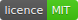
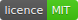

📰 关于
- 关于『书摘。』
- 『书摘。』是（Github：fly6022）于2019年8月29日编写的书籍好句摘录网站，网站收录了古今中外名著、影视、动漫中的好句。
- 使用『书摘。』
- 网站使用方法非常简单，仅仅需要刷新网页便可以更新“书摘好句”。同时，你也可以将我们的“好句”插件调用到您自己的网站。
- 『书摘。』运营模式
- 目前『书摘。』为接受捐赠、不接受任何性质广告（Google ADSense的网页广告除外）的公益性运营，我们也承诺今后仍然是如此。
- 『书摘。』运营者
- fly6022
- 『书摘。』好句开放源代码
- 正如你所看到，『书摘。』好句插件是一个开源项目，这意味着我们欢迎更多的人来参与『书摘。』的建设当中。
您可以到 Github 获取此项目的源码以及详细介绍，这里不再过多叙述。（使用 MIT 协议） - 『书摘。』网站调用信息
- 字体：思源宋体（Adobe发布的开源字体）
- 网站模板：（来源站长之家）
- 评论插件：Gitalk
- 网站托管：Github Pages / Coding Pages
 
